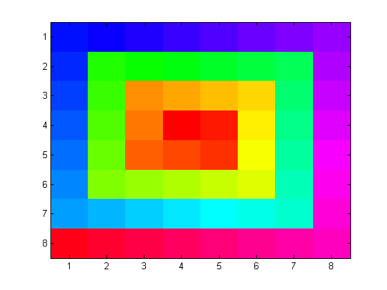
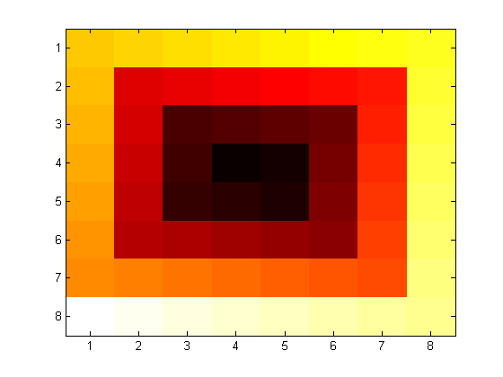
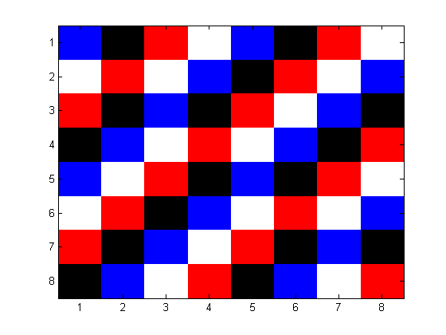

Images and Matrices
For any matrix X, IMAGE(X) displays a graphical image with brightness or color chosen from the elements of X used as indices into a colormap. This demo illustrates this idea of representing a matrix as an image and in general displaying images stored as matrices.
Contents
The Simple Spiral Matrix
SPIRAL stores a simple spiral pattern into a matrix. You can see the spiral pattern of the matrix elements in the figure. The elements of the matrix spiral away from the center, growing in magnitude linearly. Small numbers (center values) are mapped to black and dark gray, while the larger values (around the edge of the matrix) are mapped to light gray and white. The assignment of small values of the matrix to black, large values of the matrix to white and intermediate values to shades of gray determines a color map.
colormap(gray); X = spiral(8); image(X);

Colormaps
COLORMAP function is used to change the color mapping. The map had been set with colormap(gray) in the previous screen. Here we change the colormap to hue-saturation-value (hsv) color map. The colors begin with red, pass through yellow, green, cyan, blue, magenta, and return to red.
colormap(hsv);
Another color map is 'hot'. The 'hot' colormap ranges from black through shades of red and yellow to white.
colormap(hot);
The quantities 'hsv' and 'hot' used with the COLORMAP function are, of course, matrices. (More precisely, they are the names of functions which return matrices.) Color map matrices have three columns which specify intensities of the red, green and blue video components. The number of rows depends upon the particular image. In this example, the elements of X = spiral(8) range from 1 to 64, so we are using 64 rows.
M = hot; size(M)
ans =
64 3
The elements of X are used as indices into the color map and so X must have positive, integer elements between 1 and the length of the map. To see how an individual color is determined, pick one element of X, say X(7,1). The corresponding color map entry is M(37,:). This has full intensity in the red gun, a little over half intensity in the green gun, and no blue. It produces the shade of orange in the cell in the (7,1) position near the lower left corner.
ColorMapIndex = X(7,1) M(ColorMapIndex,:)
ColorMapIndex =
37
ans =
1.0000 0.5417 0
In general, the statements
image(X), colormap(M);
produce a display of colored cells where the RGB intensity of the (i,j)-th cell is the 3-vector M(X(i,j),:). The matrix X can be of any size, but its elements must be positive integers between 1 and m. The matrix M should then have m rows, 3 columns, and elements between 0.0 and 1.0. COLORMAP(M) also sets the colors used by PCOLOR(X), SURF(Z) and MESH(Z), but in these cases the data matrix, X or Z, is rescaled to provide indices into the color map. A completely different feature of our spiral example is revealed by the 'flag' color map. The 'flag' colormap is simply m/4 copies of the matrix flag(4), shown below, stacked on top of each other. The colors red, white, blue and black are used cyclically as the elements of X vary and so finer details of the image data become apparent. In this example, we can see the diagonal patterns in the matrix
colormap(flag); flag(4)
ans =
1 0 0
1 1 1
0 0 1
0 0 0
 Since color maps are matrices, it is possible to modify them, or create new ones, with MATLAB® array operations. For example the hot color map can be softened by adding some gray.
S = (hot + gray)/2; colormap(S)

A 'hot' colormap, softened by 'gray', can be brightened by raising the elements of the color map to a power less than 1.
X = spiral(8); image(X); gamma = .6; S = (hot + gray)/2; S = S.^gamma; colormap(S)

The command RGBPLOT, produces a plot of the color map. The x-axis is the map index, which corresponds to the elements of X in IMAGE(X), and the y-axis is the intensity of the red, green and blue components.
rgbplot(S)

Using SPY
A sparse matrix display function, SPY, is useful for displaying the location of image elements which point to a particular color map entry. The following code segment loads a file containing altitude data for eastern New England and displays all the elements which use the second or third element of the color map. Locations with X==1 correspond to sea level, so we see a crude representation of the coast line.
load cape
spy((X==2) | (X==3))

Examples of Large Images
Our 8-by-8 spiral matrix is only a small, illustrative example. Larger matrices resulting from extensive computations, or images obtained from photographs, satellites, or scanners are more typical. The demos directory contains several sample images with their own color maps and the color directory contains M-files which generate other useful color maps. Below, you see a listing of MAT files that have these images and their corresponding colormaps. You can choose to use any of these images (from the structure imglist), and select any of the color maps listed under colorlabels (including the default colormap 'map' that is loaded with the image). To do this, you will have to select the following code and execute it. Make changes to different parameters and see the changes.
clear X map; imglist = {'flujet', ... Fluid Jet 'spine', ... Bone 'gatlin', ... Gatlinburg 'durer', ... Durer 'detail', ... Durer Detail 'cape', ... Cape Cod 'clown', ... Clown 'earth', ... Earth 'mandrill', ... Mandrill 'spiral'}; colorlabels = {'default', 'hsv','hot','pink',... 'cool','bone','prism','flag',... 'gray','rand'}; load(imglist{4},'X','map'); imagesc(X); colormap(map); %colormap(colorlabels{1}); axis off;